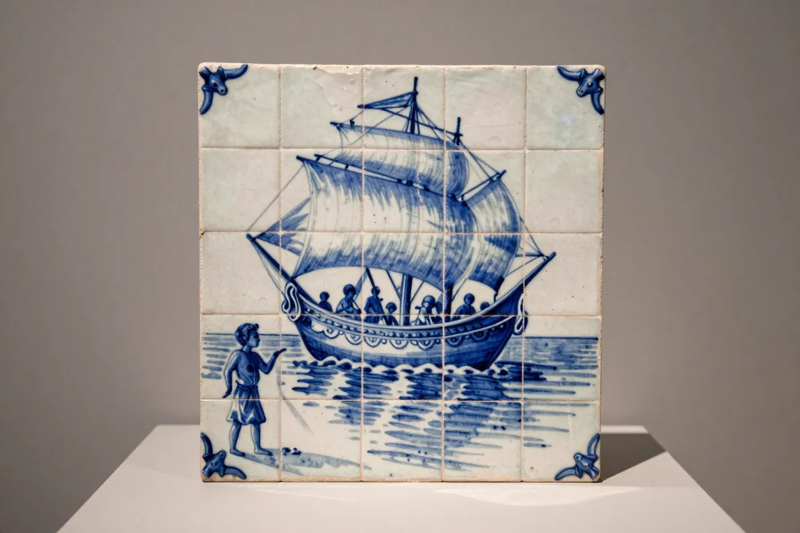

Små kvadratiske tinnglaserte fliser som nederlandske pottemakerier laget i millionvis til vegger, kjøkken og peiser. Hver flis rommer ett lite bilde i blått eller lilla og et hjørnemotiv, og et sett fliser danner en vegg.

Kjerneidé
En billig kvadratisk flis og et raskt penselstrøk gir en ren, vaskbar vegg som likevel rommer et lite bilde i hver enhet.
Designprinsipper
Hold flisen kvadratisk, 13 cm ganger 13 cm, og 5 til 8 mm tykk, slik at alle fliser passer til én vegg.
Mal ett lite motiv i midten: et skip, et barn som leker, en blomst, et dyr eller en soldat.
Legg til et hjørnemotiv i 4 deler, oksehodet, edderkoppen eller liljen, for å binde fire fliser i et mønster.
Mal i koboltblått på den rå tinnglasuren; bruk manganlilla som andrefarge i noen få sett.
Tegn motivet med en prikket papirmal, og fyll så formene med en løs vask.
Sett flisene i et rutenett med fuger under 2 mm, og legg til en sokkelflis på 13 ganger 6,5 cm ved gulvet.
Bruk bibelske scener på peisvegger, og lyse blomster på veggene i kjøkkenet og meieriet.
Brenn hver flis i en stabel med støtter; godta de små merkene fra støttene på kanten.